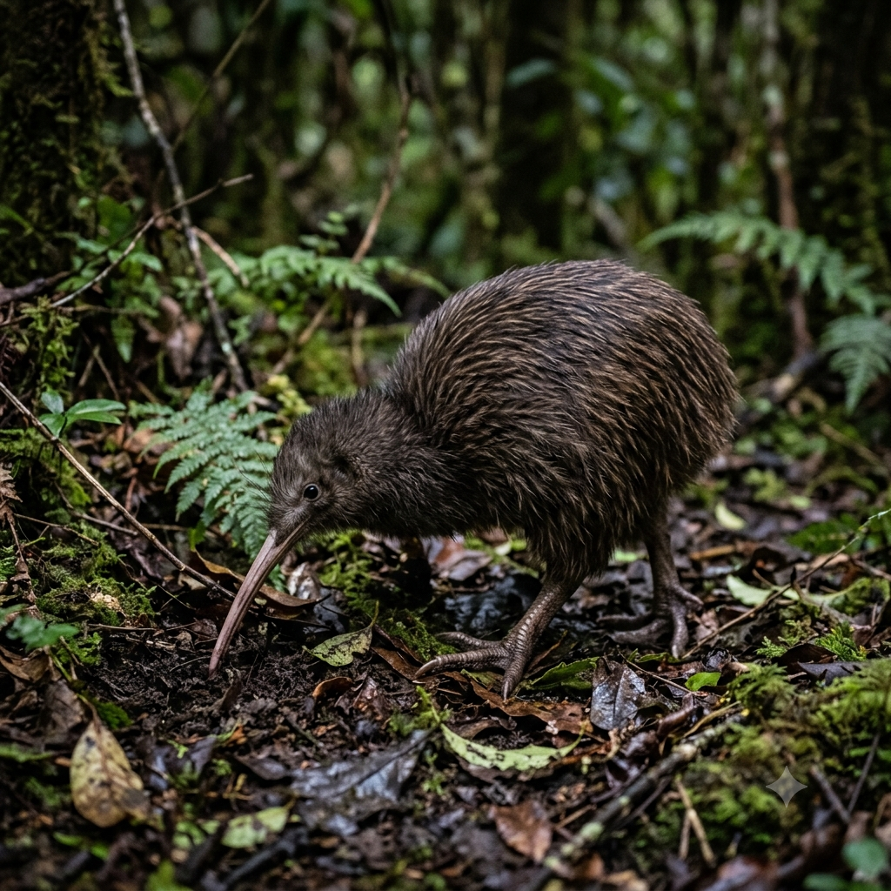

Meu Primeiro Post
por: Emanuelli G.
Bem-vindos ao blog sobre os quiuí! Não a fruta e sim a ave!
Aqui vou falar um pouco sobre essa ave maravilhosa da Nova Zelândia, que é o Quiuí.

por: Emanuelli G.
Bem-vindos ao blog sobre os quiuí! Não a fruta e sim a ave!